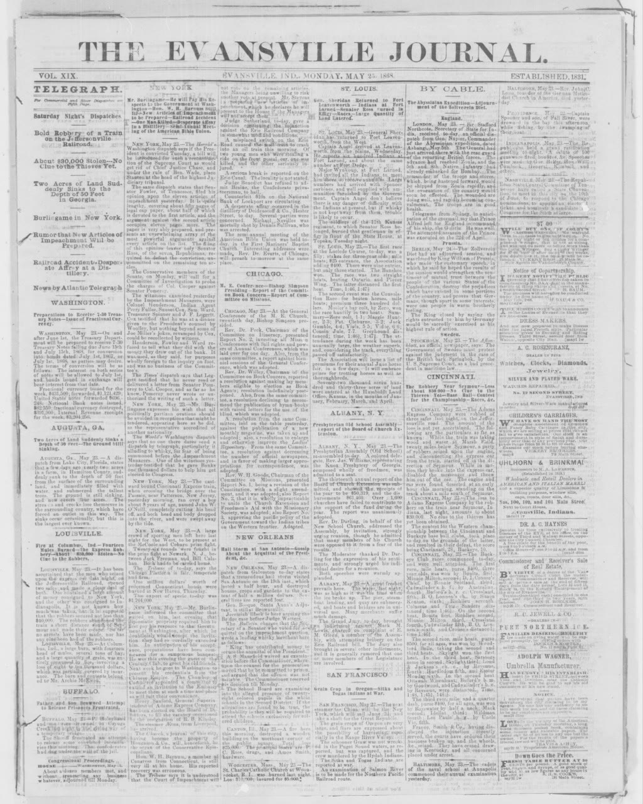

HN-210: Armed robbers separate an express car from its train
HN-210 · May 25–26, 1868 · Crime, Law & Justice > Robberies, Burglaries & Theft > Train and stagecoach robberies

page image (archive tiles)Recorded finding
Discovery narrative
Source: Evansville Journal, May 25, p. 1 — first reports; Daily State Sentinel, May 26, p. 2 — additional account.
Report: Armed men attacked a train stopped for water at Marshfield on the Jeffersonville Railroad near Seymour, Indiana. Reports described attacks on the engine crew and express messenger E. G. Harkness, the robbers uncoupling the express car, fleeing with the engine and car, and forcing safes. Initial figures differed over how many safes were looted and the amount stolen; some headlines claimed roughly $30,000 before an accounting was complete.
Assessment: Two contemporary accounts of the same robbery, with developing and conflicting particulars. Neither the precise loss nor the offenders' eventual fate is established from these pages. Follow-up open.
Original archive images (2)
Authentic images retrieved from Hoosier State Chronicles (Indiana State Library). Article crops are located using the archive's own OCR word coordinates and rendered at native crop resolution; article clips are assembled from the archive's own article-block images; page images marked "archive tiles" are stitched from the archive's own tiled page service at its 256-px tile cap; page images marked "issue PDF" are single pages rasterised from the archive's own issue PDF, with the page chosen by matching the headline against the PDF's text layer; page scans are reduced-size access renditions. No images were generated, mocked, or retouched.

Hoosier State Chronicles (Indiana State Library)
Open larger view · Archive viewer (full resolution)

Hoosier State Chronicles (Indiana State Library)
Open larger view · Archive viewer (full resolution)
Source acquisition
Status: Archive images acquired
Authentic archive-owned image renditions were retrieved for this record and are displayed above. The source-acquisition manifest preserves the original pre-acquisition feasibility assessment.
Original seed
URL (preserved verbatim): https://newspapers.library.in.gov/?a=d&d=EJ18680525.1.1
Saved research report: Historical_Newspaper_Event_Research_203-227_2026-10-22.md
Evidence note: A newspaper report means a historical publication made a claim; it does not establish that claim as fact. Contemporary reporting is separated from later scholarly context and our own assessment.